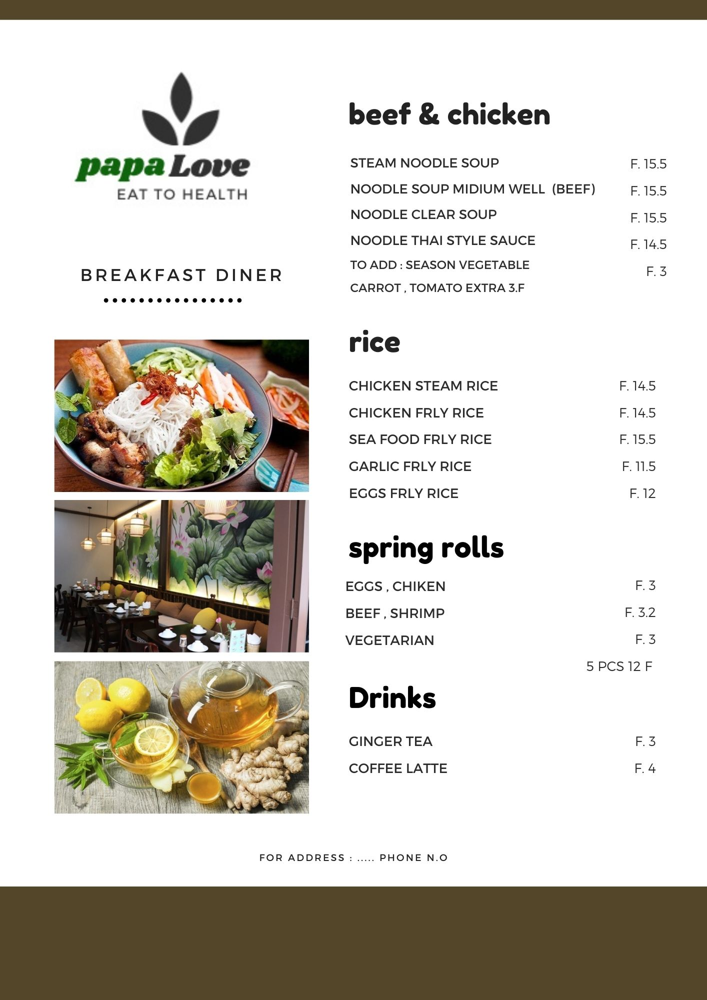

Vietnamese cuisine is one of the most diverse and vibrant in the world. It uses an enchanting mix of food from colonial visitors, native ingredients and traditional cooking techniques. Many aspects of climate, trade, history and immigration has influenced the food of Vietnam we know today.
Vietnam is made up of three distinct areas: The North, the Central Highlands and the South. Each has their own climate, culture and food traditions. Generally speaking, the North is more influenced by neighbouring China and the food tends to embrace its colder climate. The South draws inspiration from tropical influences, its hotter climate means a greater emphasis on salads, seafood, fruit, grilled meats & coconut. Central Vietnam tends to have a blend of the two styles. The use of rice and noodles is prevalent through all regions.
Despite being a small country in Southeast Asia, the food from each region in Vietnam carries unique characteristics that reflect the varied geographical and living conditions. The traditional southern Vietnamese meal is composed of fresh ingredients that only the fertile Mekong Delta can provide. The southern Vietnamese style diet is very 'green', with vegetables, fish and tropical fruits as the main ingredients.
Central Vietnam is the region which food is prepared with the strongest, boldest flavours. This region is continuously under extreme weather conditions throughout the year. It doesn’t have the abundance of fresh produce available like in the north and south. Instead, the coastline around the central Vietnam area is known for its salt and fishing industries. Due to the drastic differences in climate and lifestyles throughout the three regions of Vietnam, the foods vary. Northern Vietnamese cooking is the least bold in flavour compared to the ones from central and southern Vietnam.
Vietnamese cooking has a distinct style all of its own and some key ingredients used are fish sauce, sugar and rice. Although very similar to its closest neighbours (Thailand and Cambodia), Vietnamese cuisine tends to be less spicy, lighter and more fragrant. A typical shared meal might include soup, rice, grilled or steamed meats, a vegetable side, fresh fruit and a salad, all placed on the table together.
Nước mắm (fish sauce) is the most commonly used and iconic condiment in Vietnamese cooking. It is made from fermented raw fish and is used in most Vietnamese dishes during cooking process or added afterwards as seasoning. Other basic pantry staples include:
Shrimp paste Soy sauce Rice & rice-based flour/noodles Fresh herbs- mint, Vietnamese mint, coriander, sawtooth coriander, Thai basil, dill Fruit & vegetables Aromatics- ginger, chilli, lemongrass, spring onion, shallots, turmeric Spices- cassia bark, star anis, clove, pepper